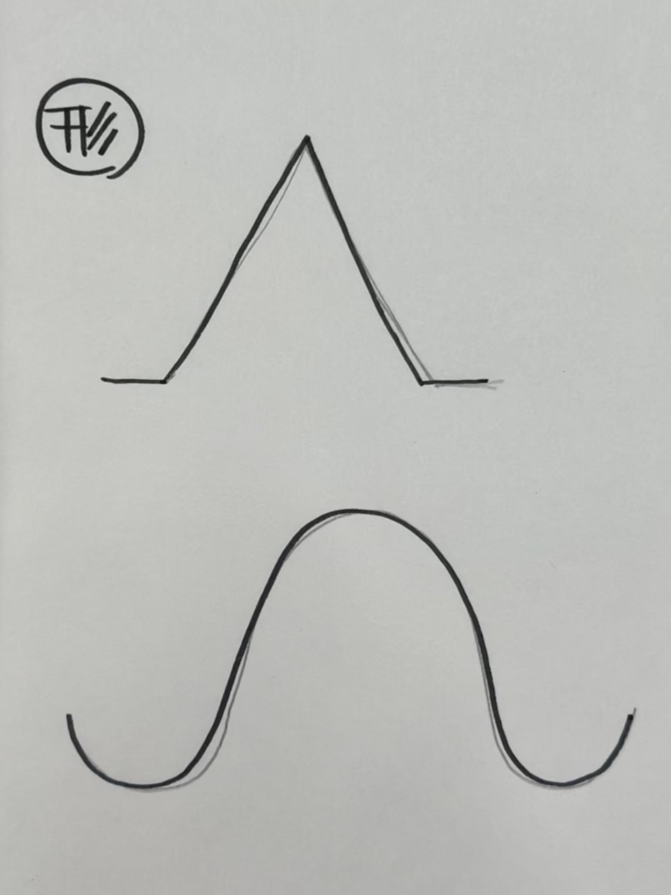

作品のタイトル
起立ピンセット
手書きスケッチ

実際に作った作品の画像
細くて立ちませんでした。また、強度もありませんでした。
幅を太くすることで立つようにはなりました。
ピンセットの形も変えてみましたが、つかむ時にかなり力が必要でした。
立たせることができ、つかむ時の力も強く入れる必要がなくなりました。
設計ファイル
起立ピンセット
作品の説明
ピンセットの幅を太くすることで立たせることができるようになり、
置き場所に必要な場所が少なくなります。
なぜこの作品を作ろうという思いに至ったのか
ピンセットは置く時に場所をとるので、
立たせることで場所を空けることができるのではないかと思いました。